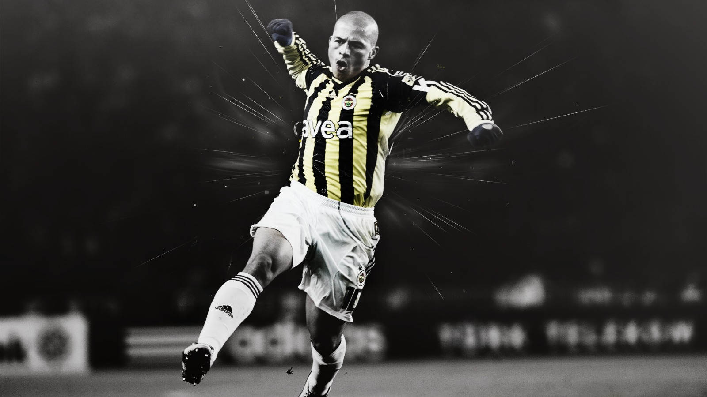

Alex de Souza

Legendary Captain of Fenerbahçe SK
Alexsandro de Souza, commonly known as Alex (born 14 September 1977), is a Brazilian football manager, pundit and retired footballer, who played as an attacking midfielder. He is a former captain of the Brazil national team and Turkish club Fenerbahçe; throughout his career, he also played for Coritiba, Palmeiras, Flamengo and Cruzeiro in Brazil, and Parma in the Italian Serie A. Currently, Alex is in charge of the São Paulo under-20 team.
- A former Brazil captain. A one-of-a-kind attacking midfielder. A 28-goal season at the age of 33.
- In 1999, With 13 goals in both international and club continental competitions across the calendar year, Alex was honoured as one of the three ‘Best Top Goalscorers’ in the world by the International Federation of Football History & Statistics. He was just 22 at the time.
- The midfielder earned 49 caps for Brazil, captained the national side to Copa América glory and earned legendary status in Turkey with Fenerbahçe.